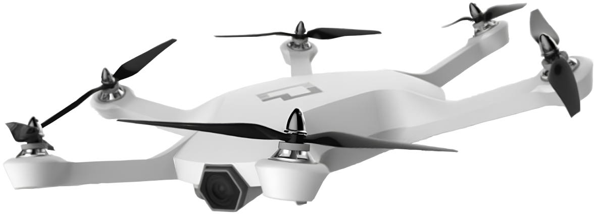

ТЕХНОЛОГИИ
ДРОНОВ
Дроны
Это автономные летательные аппараты, которые выполняют различные задачи, но без участия человека на борту. Они используются во многих областях, включая разведку, доставку, сельское хозяйство, киноиндустрию и многое другое.
Части FPV дрона
Типы дронов
01.Потребительские дроны
Потребительские дроны:
Они представляют собой небольшие летательные аппараты с четырьмя роторами, способными взлетать и приземляться вертикально, а также маневрировать в воздухе.
В последние годы потребительские дроны становятся все более доступными и популярными благодаря снижению стоимости технологии и упрощению в использовании.
Безопасность потребительских дронов:
Несмотря на их популярность и разнообразные применения, использование потребительских дронов также вызывает вопросы безопасности и приватности.
Поэтому необходимо строго соблюдать правила и рекомендации, устанавливаемые для безопасного и ответственного использования дронов.
Фото и видеосъемка:
Многие потребительские дроны оснащены высококачественными камерами, позволяющими фотографировать и снимать видео с воздуха.
Это открывает новые возможности для любителей фото и видеосъемки, позволяя создавать уникальные и захватывающие кадры.
Исследование и обзор местности:
Потребительские дроны могут использоваться для исследования и обзора местности, особенно в труднодоступных или опасных местах.
Они могут быть полезными инструментами для инженеров, геодезистов и других профессионалов.
02.с неподвижным крылом
Дроны с неподвижным крылом:
Активно используются для различных целей, включая аэрофотосъемку, картографирование, поисково-спасательные операции, мониторинг воздушных территорий и транспортировку грузов.
Они также могут быть использованы для развлечения, такие как пилотажные полеты и дальнейшие путешествия.
Управление дроном с неподвижным крылом:
Необходимо отметить, что управление дроном с неподвижным крылом требует определенных навыков и тренировки.
Пилот должен понимать принципы аэродинамики и использовать соответствующее программное обеспечение и контроллеры для управления полетом и навигацией дрона.
Принцип работы таких дронов:
Они имеют длинные и узкие крылья, которые создают подъемную силу при прохождении воздушного потока над и под крыльями.
У них также есть хвостовые поверхности, такие как руль направления и руль высоты, чтобы контролировать направление и высоту полета.
Дроны с неподвижным крылом имеют ряд преимуществ:
Они обычно способны подниматься на больше высоты, имеют большую дальность полета и могут летать в течение длительного времени благодаря более эффективной используемой энергии.
Они также могут быть более стабильными и устойчивыми во время полета, особенно при открытых пространствах и долгих расстояниях.
03.Многороторные дроны
Многороторные дроны:
Являются типом дронов, которые используют больше чем два ротора для полета.
Они могут иметь от трех до множества роторов, но наиболее распространены квадрокоптеры (четыре ротора) и октокоптеры (восемь роторов).
Преимущества многороторных дронов:
Они более стабильны и маневренны благодаря наличию нескольких роторов, что делает их подходящими для различных задач.
Они могут оставаться неподвижными в воздухе, предоставляя плавные панорамные кадры с высоты.
Они менее эффективные:
Наравне с преимуществами, многороторные дроны могут быть менее эффективными в использовании энергии, чем их однороторные аналоги и требовать регулярного обслуживания и калибровки.
Кроме того, большее количество роторов делает их более сложными в управлении и может создавать больше шума.
Возможности и применения:
Однако, сочетание их возможностей и применений делает их популярным выбором для многих задач и сфер деятельности.
Они могут доставлять средства пожаротушения и спасать людей в недоступных зонах, создавать точные трехмерные модели местности и использоваться для мониторинга и исследования территорий.
04.Подводные дроны (ROV)
Подводные дроны (ROV):
Подводные дроны, также известные как роботы обследования и работы под водой (Remotely Operated Vehicles, ROV), являются беспилотными подводными аппаратами, предназначенными для проведения различных задач под водой.
Они могут собирать образцы воды и грунта, измерять параметры воды, картографировать подводный рельеф и исследовать морскую фауну и флору.
Преимущества многороторных дронов:
ROV имеют ряд преимуществ перед субмаринами или человеческими ныряльщиками, такими как большая глубина погружения, длительное время работы, возможность использования в опасных условиях и более низкая стоимость.
ROV играют важную роль в научных и промышленных исследованиях подводного мира.
Они менее эффективные:
Однако, они также имеют свои ограничения, такие как зависимость от электрического питания, проблемы с коммуникацией на больших глубинах и ограниченный рабочий объем.
Кроме того, они могут быть оснащены мощными датчиками и манипуляторами для более точной работы.
Возможности и применения:
ROV широко используются в различных отраслях и задачах, где по какой-либо причине невозможно или опасно для человеческих ныряльщиков.
Они управляются оператором на поверхности с помощью пульта управления и видеонаблюдения.
05.Грузовые дроны
Грузовые дроны:
Это беспилотные летательные аппараты, способные перевозить грузы на значительные расстояния.
Они представляют собой инновационное средство доставки, которое может быть использовано в различных сферах деятельности.
Преимущества грузовых дронов:
Главное преимущество грузовых дронов заключается в их способности доставлять грузы намного быстрее, чем традиционные средства доставки, такие как автомобили, поезда или корабли.
Они могут обойти пробки и преодолеть препятствия на земле, доставляя грузы напрямую к месту назначения.
Проблемы и ограничения:
Травмирование людей и повреждение существующей инфраструктуры являются серьезными проблемами, которые требуют аккуратного регулирования.
Ограниченная полетная грузоподъемность и дальность могут также представлять ограничения для грузовых дронов.
Возможности и применения:
Основные сферы, где они используются, включают доставку грузов, медицинские экспресс-доставки, логистику и снабжение, сельское хозяйство и экологию.
Они также могут использоваться для поставки товаров из интернет-магазинов или в сельском хозяйстве для опрыскивания полей или анализа состояния урожая.
06.Нано-дроны
Нано-дроны:
Маленькие и компактные беспилотные летательные аппараты, размеры которых обычно не превышают нескольких сантиметров.
Они отличаются от других дронов своей миниатюрностью и мобильностью, что позволяет им выполнять разнообразные задачи в местах, которые недоступны для традиционных дронов или людей.
Преимущества нано-дронов:
Нанодроны являются самыми маленькими и легкими из всех категорий дронов. Они обычно имеют длину всего несколько сантиметров и весят несколько десятков граммов.
Нанодроны обычно оснащены продвинутыми системами стабилизации и управления, что позволяет им быть очень маневренными и летать в ограниченных пространствах.
Технологии и препятствия:
Из-за их крайне малых размеров, нанодронам требуется высокотехнологичное оборудование и достаточная энергия для работы, включая полет и передачу данных.
Кроме того, управление нанодронами может быть сложным из-за ограниченной видимости и связи.
Возможности и применения:
Они могут использоваться для разведки и исследования в узких или опасных местах, таких как разрушенные здания после землетрясения или аварии, или для осмотра труднодоступных мест в промышленных или промысловых объектах.
Нанодроны также могут использоваться для поиска и спасения, мониторинга и инспекции инфраструктуры.
07.Одновинтовые вертолеты
Дроны вертолетного типа:
Одновинтовые дроны имеют вертикальную компактную конструкцию и универсальные моторы с крепежом для винта.
Они оснащены одним горизонтально размещенным винтом, который создает подъемную силу и контролирует повороты и наклон аппарата.
Преимущества:
Одновинтовые дроны обладают отличной маневренностью и способностью оставаться стабильными в воздухе.
Они могут выполнять точные маневры, такие как круговой полет или остановка на месте, что делает их идеальными для фотосъемки, видеосъемки и других задач, требующих точности и стабильности полета.
Недостатки:
Они потребляют больше энергии, чем мультироторные дроны с множеством винтов, из-за необходимости поддерживать плавное вертикальное движение.
Кроме того, наличие всего одного винта может ограничить их нагрузочную способность и устойчивость на ветреных условиях.
Возможности:
Они могут использоваться для аэрофотосъемки и видеосъемки, позволяя получать уникальные ракурсы и подходы к съемке из воздуха.
Кроме того, они могут быть использованы для поиска и спасения, агрокультурных задач, изучения окружающей среды и многих других.
08.Гибридные дроны вертикального взлета и посадки
VTOL дроны:
(Vertical Takeoff and Landing) представляют собой аппараты, способные начинать и заканчивать свой полет, взлетая и приземляясь вертикально, а также выполнять горизонтальные полеты в промежуточном режиме.
Они имеют вертикально развернутые пропеллеры или воздушные винты для вертикального взлета и посадки.
Преимущества:
VTOL обычно обладают большей длительностью полета по сравнению с чистыми мультикоптерами.
VTOL могут перейти в режим горизонтального полета, они могут достигать большей скорости и преодолевать большую дистанцию с более высокой эффективностью, чем мультикоптеры.
Конструкция:
Гибридные дроны VTOL комбинируют в себе преимущества мультикоптеров и фиксированных крыльевных аппаратов.
Они имеют вертикально развернутые пропеллеры или воздушные винты для вертикального взлета и посадки, а также крылья и двигатель, обеспечивающий горизонтальный полет.
Возможности и применения:
Они используются в геодезии и аэрофотосъемке для съемки больших территорий, мониторинга сельскохозяйственных угодий, поиска и спасения, доставки грузов и т.д.
Военные силы также используют гибридные дроны VTOL в рамках своих операций.
09.Гоночные дроны
Гоночные дроны:
Это специально разработанные маленькие и маневренные аппараты, предназначенные для соревнований в скоростном и точном управлении.
Они предлагают уникальный и захватывающий опыт для пилотов и зрителей, а также стимулируют развитие новых технологий и инноваций в сфере беспилотных авиационных систем.
FPV и управление:
Гоночные дроны обычно оснащены системой первого лица (First Person View, FPV), позволяющей пилоту видеть видеозапись с камеры, установленной на дроне, на специальных видеоочках.
Они также управляются с помощью специальных пультов или джойстика, которые обеспечивают точное и мгновенное управление.
ESC и литий-полимерные батареи:
Для эффективного управления и питания гоночных дронов используются импульсные регуляторы скорости (Electronic Speed Controllers, ESC), которые могут обеспечивать высокие частоты обновления и быструю реакцию на команды пилота.
Литий-полимерные – обладают высокой энергетической плотностью и способны поддерживать высокую выходную мощность.
Конструкция:
Гоночные дроны имеют компактный размер и легкую конструкцию, чтобы обеспечить максимальную маневренность и скорость.
Они обычно имеют раму из карбонового волокна или других прочных материалов, чтобы быть легкими и одновременно прочными.
10.Дроны на солнечных батареях
Дроны на солнечных батареях:
Это специальные беспилотные летательные аппараты, которые используют солнечные панели для питания своих систем.
Эти панели состоят из фотоэлектрических солнечных элементов, которые преобразуют солнечный свет в электрическую энергию. Заряженные батареи дрона позволяют ему работать даже в отсутствие непосредственного солнечного света.
Преимущества и недостатки:
Они могут быть более чувствительными к погодным условиям, требуют яркого солнечного света для эффективной работы и, в зависимости от цели их использования, возможно потребуется комбинированное использование с другими источниками питания.
Использование солнечных батарей в дронах позволяет снизить негативное воздействие на окружающую среду.
Беспрерывный полет:
Благодаря солнечным батареям дроны могут быть способными к длительным автономным полетам.
При наличии достаточного солнечного света, электроэнергия, полученная от солнечных панелей, питает моторы, пульт управления и другие системы дрона, что позволяет ему оставаться в воздухе на протяжении продолжительного времени.
Применения:
Они могут быть использованы для мониторинга и наблюдения за природными заповедниками и экосистемами, исследования местности, сельскохозяйственного обработки, геологии и геодезии, а также для связи и передачи данных в удаленных районах.
Дроны на солнечных батареях становятся все более эффективными и доступными, открывая новые возможности для применения в различных областях.
11.Военные и разведывательные дроны
Военные дроны:
Они обладают большой проникающей способностью, маневренностью и гибкостью, что делает их важным средством в конфликтах и операциях различного масштаба.
Однако, использование беспилотных летательных аппаратов также вызывает этические и юридические вопросы, такие как проблемы конфиденциальности, безопасности данных и риски ошибочного применения или аварийного использования.
Защита и безопасность:
Военные дроны также используются для обеспечения защиты и безопасности своей территории и войск.
Они могут служить для обнаружения и отслеживания воздушных, наземных и морских угроз, засекать и перехватывать вражеские объекты и обеспечивать командование эффективными данными для принятия мер по предотвращению иде нападения.
Беспилотность:
Они могут быть полностью автономными или управляемыми оператором с помощью дистанционного пульта или специального программного обеспечения.
Отсутствие экипажа на борту дает дронам большую гибкость в выполнении задач и снижает риск для жизни и здоровья военнослужащих. Это позволяет армии выполнять операции против противника, минимизируя риск для своего персонала.
Возможности и применения:
Военные дроны охватывают широкий спектр типов и моделей, каждый из которых предназначен для выполнения определенной задачи.
Это включает в себя разведывательные дроны, используемые для сбора разведывательной информации о территории противника; боевые дроны, оснащенные оружием и использованные для целенаправленного уничтожения целей; грузовые дроны, предназначенные для транспортировки грузов и медицинской эвакуации; и другие специализированные дроны.